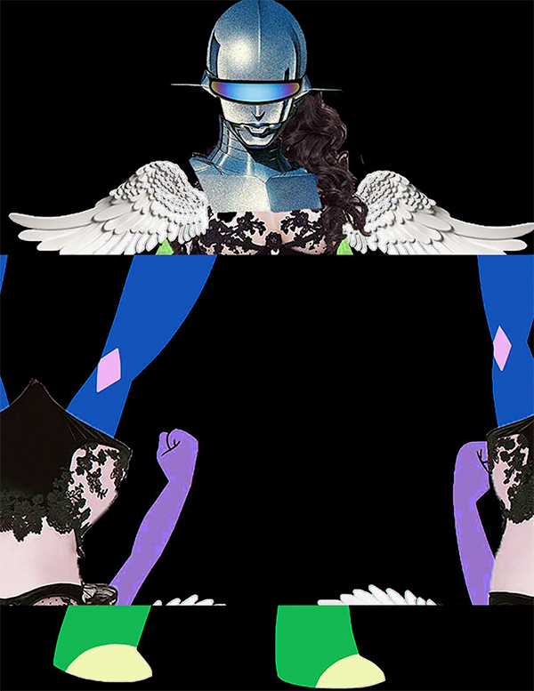
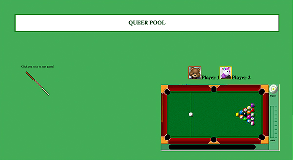
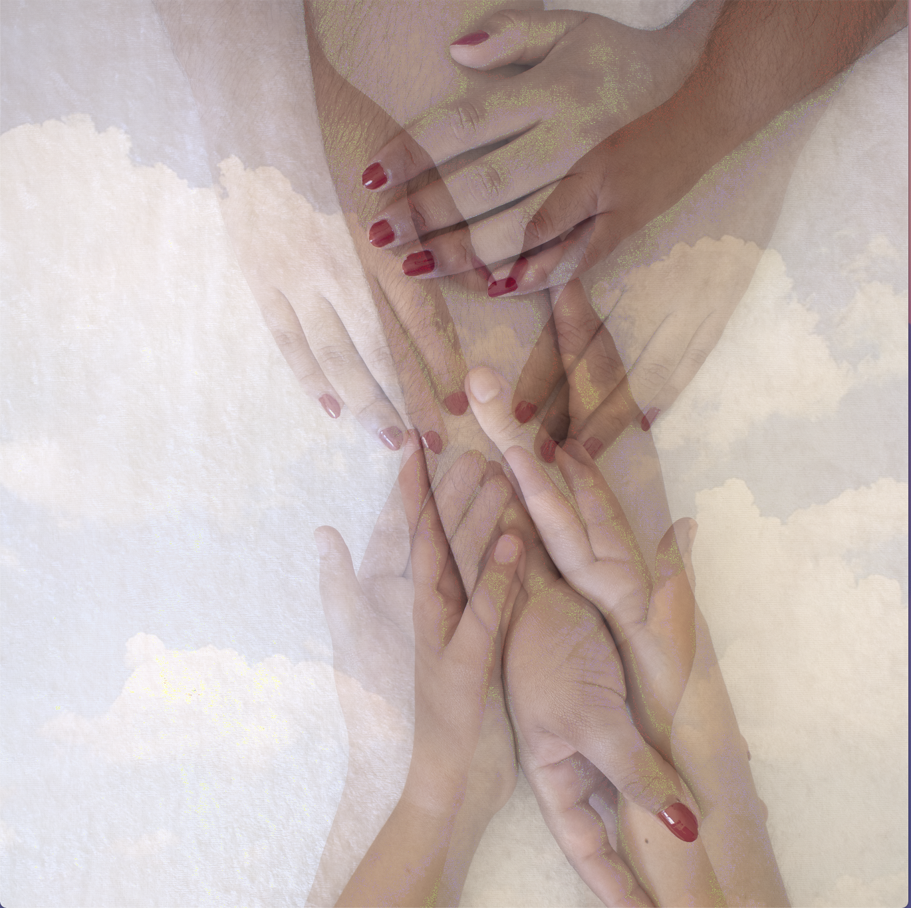
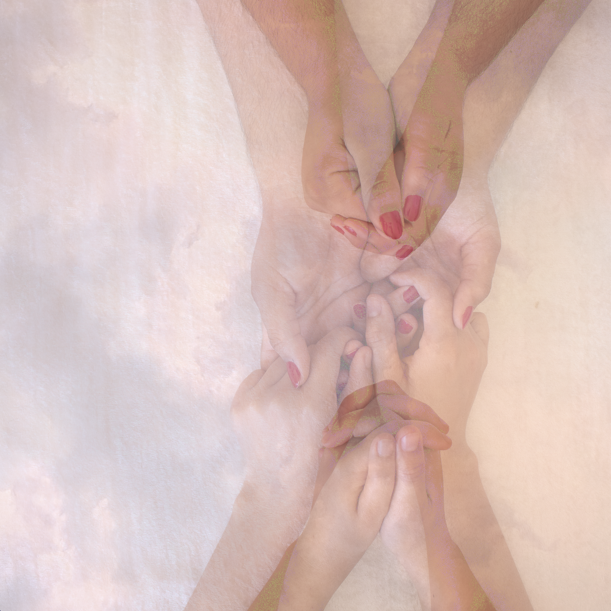
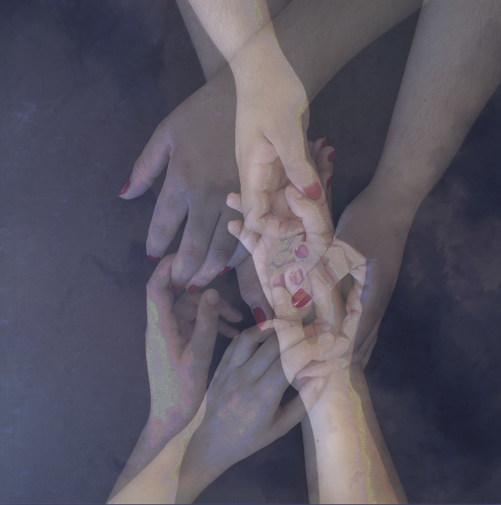

CNK Cyborg, Digital Image, 2019
To create the our cyborg I took on the head portion. I acquired images from the internet and opened them into Photoshop. Then with the Lasso tool I cut it out the parts that I wanted to use to create the head portion of our cyborg.

Subconscious, Digital Image, 2019
The beginning concept for our group in this project was landscape. We made it cohesive by sizing it 11x14. For this project, I utilized imagery that is symbolic to me. I searched images on the web then copied, transformed and cropped them to fit into my composition. I wanted to create a surreal landscape. Something that is otherworldly, with symbols that I often encounter in life and in dreams.
25, video, 2019
"25" is a conceptualization my emotions about a traumatic event that took place the day before my 25th birthday. In the audio, I included myself reading aloud journal entries and poetry about the incident including audio that exemplifies my healing journey. My goal was to create a visual experience that is stylistically simplistic accompanied with audio that is more complex and multilayered

Queer Pool, Net Art, 2019
Our concept was inspired by the Yahoo Pool game of the early 2000s. We customized it to make it relevant to our identities and community. We envisioned Queer Pool to be a place where friendships could be built. It serves as some of our early internet memories and fictional chat room.
Luna y Sol, Code Art, 2019
Luna y Sol is a collaborative piece between Noah and myself. The concept for this piece was to incorporate movement and interaction between the moon and sun over two different backgrounds.



At the Table, Digital Images, 2019
The mediums I utilized were scans of 120mm film that were digitalized and manipulated and glitched. The concept for this series was an exploration of relationships. I wanted to focus on the ways affection can be expressed between two people and how that reads when it is multiple images. I wanted to emphasize on the concept of affection being transmitted and what it can look like. The glitching of the images was done to add a visual representation of energy being transmitted between two people.